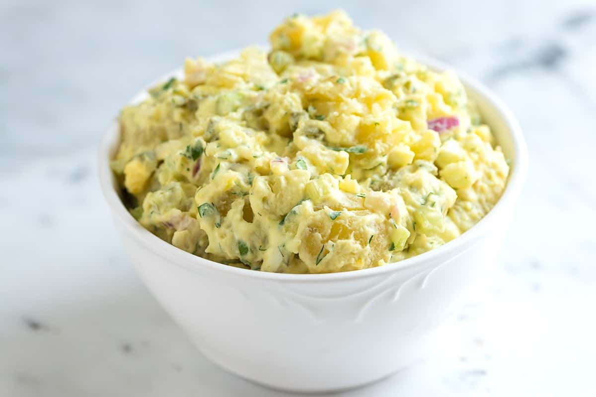

Potato Salad

Description
Our potato salad recipe is easy! You’ll make it like a pro in no time with our tricks. I show you how to choose and cook the potatoes, my favorite potato salad ingredients, and our family’s beloved creamy dressing that’s so good you’ll be licking the bowl clean (we also use it when making this red potato salad with herbs).
Ingredients
- 2 pounds small yellow, red, or white potatoes
- 1 tablespoon apple cider, wine, or rice wine vinegar
- 1/2 cup sour cream
- 1/4 cup mayonnaise, try homemade mayonnaise
- 1 tablespoon yellow mustard, substitute Dijon or whole grain mustard
- 1/2 medium red onion, finely chopped, about 1/2 cup
- 3 celery stalks, finely chopped, about 1/2 cup
- 1 medium dill pickle, finely chopped, about 1/3 cup, try homemade pickles
- 2 hard-boiled eggs, peeled and chopped, optional
- 1/4 cup chopped fresh herbs like parsley, dill, chives, tarragon, or cilantro
- Salt and fresh ground black pepper
Steps
Cook potatoes
- Add the potatoes to a large pot and cover with 1 1/2 inches of water. Season with salt — use one teaspoon for every quart of water.
- Bring the water to a boil, then reduce to a simmer (boiling the potatoes can cause them to hit one another and break apart)—Cook 15 to 20 minutes or until easily pierced with a fork.
- Meanwhile, set up an ice bath. Add cold water to a medium bowl filled with ice. Drain the potatoes and then place them into the ice bath. When cool, peel the potatoes by gently pinching the skin and pulling it away.
- Chop the peeled potatoes into bite-size chunks, then add to a large bowl. Scatter the vinegar over potatoes and lightly season with salt.
"De-flame" onions
- While the potatoes cook, add the onions to a small bowl and cover with cold water. Wait for 10 minutes, then rinse. This step helps to tone down the raw flavor of the onions.
Make potato salad
- Stir the sour cream, mayonnaise, and mustard in a bowl.
- Add the sour cream mixture, de-flamed onions, celery, pickles, eggs, and herbs to the potatoes. Gently stir to combine, being careful not to mash the potatoes too much.
- Season with salt and pepper to taste. If you have the time, refrigerate at least 30 minutes before serving.